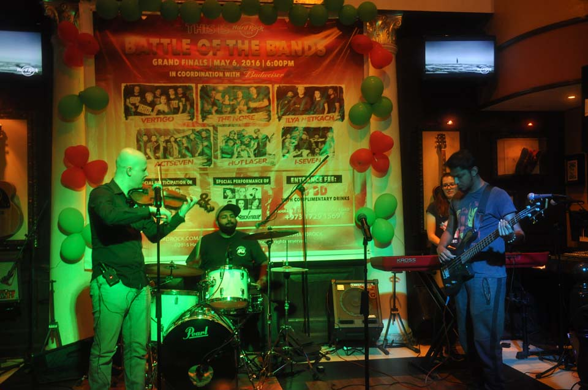

Ukrainian’s jazz band mesmerized Middle Eastern audience
Since olden times, Ukrainians have been known for their musicality – and not just in terms of folk music. Ukrainians don’t sit by and ignore modern music. It isn’t only about winning European contests; our performers are well-known even in the Middle East.
For instance, last week, the Ilya Netkach Band achieved great success in the Battle of the Bands in Bahrain.
“Three weeks ago, I received, from the organizer of the Battle of the Bands at the Hard Rock Cafe Bahrain, an invitation to participate. I gathered my colleagues and we formed a band. Before the semi-final, we had less than a week to rehearse. Then we had only another week to rehearse before the final. During the final, the judges gave us a standing ovation. People had a very emotional response to this very specific style of music,” said Mr. Ilya, the band leader.
Approximately 20 bands took part in the contest and six of them made it into the finals. “The brightest moments for us were on-stage performances. The audience’s response was absolutely unexpected. This was twice as valuable to us because we don’t have our own audience in Bahrain,” – that was how the musicians described the experience.
Mr. Ilya is a jazz violinist who composes his own music, mostly in the fusion style. He originally hailed from Kharkiv. In Ukraine, he had his own band, which performed at Fete de la Musique (Kharkiv). After moving to Qatar, Mr. Ilya participated in jazz jams and recorded his own music, which he posted to iTunes. Later, Mr. Ilya returned to Ukraine, where he stayed for six months and continued his musical activities. He played two tours as part of the Sympho Show “World Hits” and then moved to Bahrain.
Though the band was created specifically for the contest, the musicians will continue collaborating. “We have plans for the future. At present, I have invited a few more musicians and we are working on a full-scale concert program. The first show is scheduled for after Ramadan. Our band will be international. The keyboardist (Alina Kharchenko) and I are from Ukraine, the guitarist (Sunny Salis) is from India, the bass player is from Pakistan and the drummer (Ryan John) is from Bahrain,” said Mr. Ilya.
The band has its own creative vision. The musicians cast away any comparisons and state that music is not sports. The main point of any contest is to perform for the audience, not to win. Present-day musicians often forget this. “Winning the contest was not our main goal. Even in the finals, we did not expect anything. I knew that we would win something only when the judging panel gave us a standing ovation. It’s still possible to read our communication with the organizer of the contest on the Hard Rock Café page. There, he said, “We’re waiting for the result,” and I responded that this was not the most important thing, that we had achieved our outcome when the last song ended. It’s not good to forget the real reason why music exists,” said the musician.
There are quite a lot compliments about the band’s performance could be found online. Users emphasized the unique character of the music and the outstanding talent of the musicians.
Translated from Ukrainian. Source – Global Ukraine